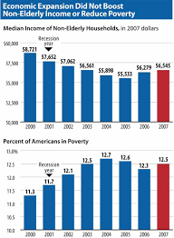
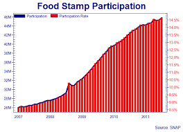

These days, more and more people use data visulasation in
commercial adevertisements and journals. Some data visulasation help people to understand contents easier. However, some usage of data visulasation mislead people.
The role of data visualization in communicating the complex insights hidden inside data is vital. This is becoming more and more important since the audience for data visualizations is also expanding along with the size of data. Data visualizations
are now consumed by people from all sorts of professional backgrounds. For the same reason, the ease of consumption is now a hot topic. While data scientists and analysts have an eye for digging out the key insights from even complex visualizations,
a top business stakeholder or an average person might not be able to do the same.
And this is what makes effective data visualization the need of the hour. Communicating the data effectively is an art. However, many data scientists lag behind when it comes to the design.
Some Ways Avoid Misleading
Hiding relevant data
Presenting too much data
Distorting the presentation of data
Describing the data inaccurately in annotations, title, or within the visualization itself
 check original information
check original information
What it want to show: They want to use these two data visulasation to show the supporting situation.
How it shows: They use two different colors to show that different regions suppoert different political parties.
What information it gives to the audience: However, just use regions to show supporting is not accurate. For example, in region A, there is 51% citizens who support Party A, others (49%) support Party B So, the color of this region will be showed as Bule Meanwhile, if in region B, there are 99% people who support Party A, others supportParty B, region B also
shows Bluein region B. However, obviously, in region A and region B ,the pesentage of supporting for two parties are different. Thus, it is not accurate to show supporting situation by using these two graphs,
considering the specific politcy.

These two graphs are misleading and far from being “real”, although it does show accurate data. This is yet another example of how to build a dubious visualization using legitimate numbers. Good data isn't the only component of visualization;
the way you depict it matters a lot

A much more truthful depiction of the results appeared in The New York Times (below). It improves on the imperfect binary Brexit map by adding shades of color, which is a great idea.
Actually, by taking a look at the maps by the Times, we’d argue that two maps above obscure the fact that the some highly populated areas of Scotland were strongly in favor of remaining in the EU.
 check original information
check original information
Background Information: A new chart set to be released later today by the Republican side of the Senate Budget Committee details a startling statistic: "Over 100 Million People in U.S. Now Receiving Some Form Of Federal Welfare."
How it shows: They use two different colors to show that different regions suppoert different political parties.
What information it gives to the audience: The data come "from the U.S. Census’s Survey of Income and Program Participation shows that nearly 110,000 million individuals received a welfare benefit in 2011. (These figures do not
include other means-tested benefits such as the Earned Income Tax Credit or the health insurance premium subsidies included in the President’s health care law. CBO estimates that the premium subsidies, scheduled to begin in 2014, will
cover at least 25 million individuals by the end of the decade.)"
Analysis:
For instance, look at a graph published by The Weekly Standard in an article on welfare. Looking at the visual components on the graph, we can see that the size of the bars imply that around 300% more US citizens used
welfare in 2011 than 2009, a staggering statistic. A closer look at the graph, however, reveals that the y-axis begins at 94 million, a true crime considering that the y-axis of any bar graph should always start from 0. Failure to
start the y-axis at zero results in inflated bar sizes. When solely considering the numbers, the difference in welfare recipients from 2009 to 2011 was only about 10%. The startling difference between the facts portrayed by the graph
and the facts given by the actual data is a troubling. Sadly, this is an effective tactic, as the graph could easily lead any reader to believe that the US had a severe welfare dependency crisis. Few news sites are immune to inaccurate
visuals. Whenever someone wants to catch up on current events, misleading graphs are used on practically every news site… and it doesn’t stop at news. We’ve all bought an instant-blow-dryer-comb under the impression that it was “top
quality” and “x times more effective than the competition” at least once. Fallacious charts aren’t the root of our poor shopping decisions, but they have proven to be capable of placing false impressions on consumers, causing them
to purchase subpar items due to their flashy, yet inaccurate, graphs. Though it is unlikely that journalists and advertisers will ever cease their publishing inaccurate visuals, it is possible for readers to avoid being lured into
them. There are several common tactics used to make graphs misleading, including uneven y-axis increments, lack of axis labels, incorrect sizing of visuals in pictographs, information that is plotted wrong (yes, it has happened in
major publications), and misinterpretation of the statistics. If people start looking out for these red flags, then we will not be so deceived by graphs anymore. Deceptive graphs are very common in the media, which only emphasizes
the importance of knowing which graphs are legitimate. If you learn what makes a chart misleading, you will be able to outsmart all of these graphs, and you can even guide modern audiences in the era of “alternative facts.”
More misleading graphs



Eight Design Principles
Balance the design
Emphasize the key areas
Illustrating movement
Smart use of patterns
Proportion
Proper rhythm
Variety
Theme